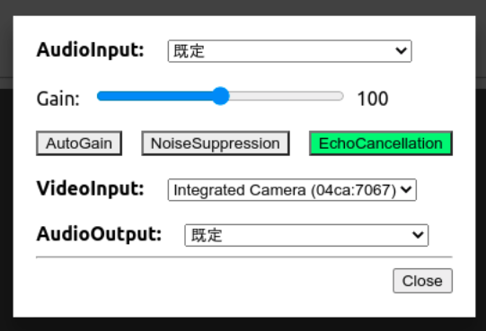
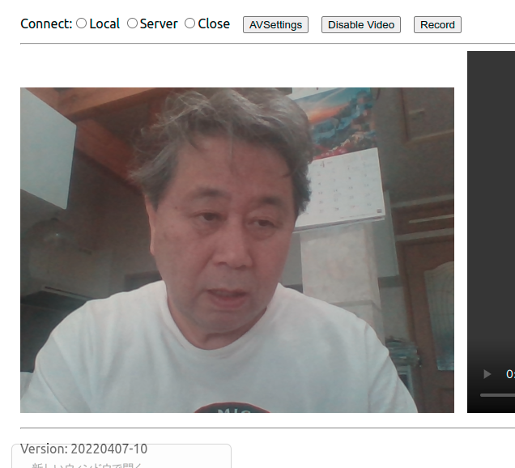

KG's webrtc-client
Currently, local connection via localhost in the browser only.
Modal window:
If there is only one device is connected (including built-in), just close.
If more than one camera and audio are connected,
you can choose a pair of camera and audio input device.

Main menu;
- "Local" begins transmission of video and audio from local to the remote peer
on the same brower tab.
- The communication is over loopback interface (127.0.0.1 or ::1 (IPv6)).
- You may disable/enable transmission of camera track.
- Also, the mediastream received at the remote peer can be
recorded.
Mediastream blob is exported when recording is stopped.
Blob type depends on Web browser, webm, mp4, opus (in case of audio only).
